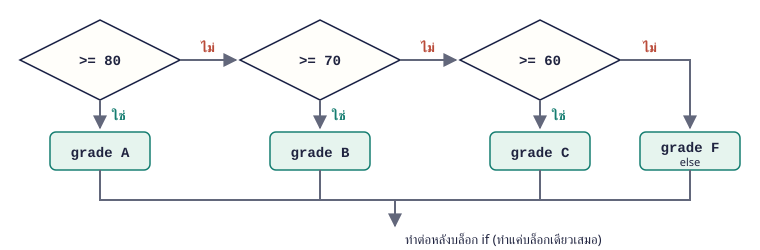

จบบทนี้แล้วทำได้ เขียน if / elif / else ให้ครอบคลุมทุกกรณี เรียงเงื่อนไขถูกลำดับ และเยื้องบรรทัดถูกต้อง
เนื้อหา
04.1 if: ทำเมื่อเงื่อนไขเป็นจริง if เงื่อนไข: ตามด้วยคำสั่งที่เยื้อง 4 ช่อง คำสั่งที่เยื้องจะทำเฉพาะเมื่อเงื่อนไขเป็น True บรรทัดที่ไม่เยื้องทำทุกครั้ง
temperature = 36
if temperature >= 35:
print("อากาศร้อนมาก")
print("ดื่มน้ำเยอะ ๆ")
print("จบการตรวจ")อากาศร้อนมาก
ดื่มน้ำเยอะ ๆ
จบการตรวจ จำง่าย ๆ อย่าลืม : ท้ายบรรทัด if และเยื้องให้เท่ากันทุกบรรทัดในบล็อก
04.2 if-else: เลือก 1 ใน 2 ทาง else: คือกรณีที่เหลือ ทำเมื่อเงื่อนไขของ if เป็นเท็จ ทุกค่าจึงได้ทำทางใดทางหนึ่งเสมอ
score = 42
if score >= 50:
print("ผ่าน")
else:
print("ไม่ผ่าน")ไม่ผ่าน 04.3 elif: หลายทางเลือก เมื่อมีมากกว่า 2 กรณี ใช้ elif Python ตรวจจากบนลงล่างและเลือกทำบล็อกแรกที่เป็นจริงเพียงบล็อกเดียว ที่เหลือข้ามไปทั้งหมด

ผังการทำงาน if / elif / else: ตรวจเงื่อนไขทีละข้อจากบนลงล่าง เจอข้อที่จริงก็ทำแล้วออกทันที score = 74
if score >= 80:
grade = "A"
elif score >= 70:
grade = "B"
elif score >= 60:
grade = "C"
else:
grade = "F"
print("เกรด", grade)เกรด B จำง่าย ๆ ตรวจช่วงตัวเลขให้เรียงจากมากไปน้อย ถ้าเอา score >= 60 ไว้บนสุด คะแนน 95 จะได้ C
04.4 เงื่อนไขหลายข้อ และ if ซ้อน รวมเงื่อนไขในบรรทัดเดียวด้วย and / or หรือใส่ if ไว้ในอีก if ก็ได้ (เยื้องเพิ่มอีกระดับ) ให้เลือกแบบที่อ่านง่ายกว่า
age = 20
has_id = True
if age >= 18 and has_id:
print("เข้างานได้")
if age >= 18:
if has_id:
print("เข้างานได้ (แบบ if ซ้อน)")
else:
print("กรุณาแสดงบัตร")เข้างานได้
เข้างานได้ (แบบ if ซ้อน) 04.5 ข้อผิดพลาดที่เจอบ่อย เงื่อนไขส่วนใหญ่ผิดจาก 4 สาเหตุนี้ ทดสอบด้วยค่าตรงขอบ เช่น 79, 80, 81 จะช่วยจับได้เร็ว
ผิด ตัวอย่าง แก้เป็น ลืม : if x > 0if x > 0:ใช้ = แทน == if x = 0:if x == 0:เยื้องไม่เท่ากัน บรรทัดหนึ่งเยื้อง 4 อีกบรรทัด 2 เยื้อง 4 ช่องทุกบรรทัด เรียง elif ผิด >= 50 ก่อน >= 80เรียงจากเงื่อนไขแคบ/มากไปน้อย
ตัวอย่างโปรแกรม
ตัวอย่าง 04.1 · ตัดเกรดจากคะแนน
ตรวจค่าที่ผิดก่อน แล้วไล่ช่วงคะแนนจากมากไปน้อย
Python source score = int(input("คะแนน (0-100): "))
if score < 0 or score > 100:
print("คะแนนไม่ถูกต้อง")
elif score >= 80:
print("เกรด A")
elif score >= 70:
print("เกรด B")
elif score >= 60:
print("เกรด C")
elif score >= 50:
print("เกรด D")
else:
print("เกรด F")Output · ค่าที่ผู้ใช้พิมพ์แสดงต่อท้ายคำถาม คะแนน (0-100): 74
เกรด B
อธิบาย ตรวจค่าที่อยู่นอกช่วง 0–100 ก่อน เพื่อไม่ให้ค่าผิดได้เกรด 74 ไม่ถึง 80 จึงข้ามไปตรวจ >= 70 ซึ่งจริง จึงแสดงเกรด B แล้วจบ ไม่ต้องเขียน score >= 70 and score < 80 เพราะถ้ามาถึง elif นี้แปลว่าไม่ถึง 80 แน่นอน
ตัวอย่าง 04.2 · คำนวณค่าส่ง
เงื่อนไขส่งฟรีมีผลเหนือกว่าทุกกรณี จึงตรวจเป็นข้อแรก
Python source total = float(input("ยอดซื้อ: "))
member = input("เป็นสมาชิกไหม (y/n): ")
if total >= 500:
shipping = 0
elif member == "y":
shipping = 20
else:
shipping = 45
print(f"ค่าส่ง {shipping} บาท")
print(f"ยอดชำระ {total + shipping:.2f} บาท")Output · ค่าที่ผู้ใช้พิมพ์แสดงต่อท้ายคำถาม ยอดซื้อ: 450
เป็นสมาชิกไหม (y/n): y
ค่าส่ง 20 บาท
ยอดชำระ 470.00 บาท
อธิบาย ยอดตั้งแต่ 500 ส่งฟรีทุกคน จึงตรวจเป็นข้อแรก ถ้าไม่ถึง 500 จึงดูว่าเป็นสมาชิกหรือไม่ แต่ละบล็อกกำหนดค่า shipping แล้วค่อยแสดงผลครั้งเดียวด้านล่าง
แบบฝึกหัดท้ายบท
เรียงจากง่ายไปยาก ลองเขียนเองให้ได้ output ตรงตัวอย่างก่อน แล้วค่อยเปิดเฉลย
ข้อ 04.1 บวก ลบ หรือศูนย์ ★ ง่าย รับตัวเลข แล้วบอกว่าเป็นจำนวนบวก จำนวนลบ หรือศูนย์
เข้าใจโจทย์
โจทย์ให้ ตัวเลข เช่น -3
ต้องหา จำนวนลบวิธีคิด
มี 3 กรณี จึงใช้ if / elif / else ตรวจ > 0 และ < 0 ที่เหลือคือศูนย์ ตัวอย่างผลลัพธ์ ตัวเลข: -3
จำนวนลบ
🔒 ใส่รหัสเพื่อดูเฉลย
แนวคำตอบและเหตุผล
else รับกรณีที่เหลือซึ่งมีแค่ 0 จึงไม่ต้องเขียน n == 0
n = float(input("ตัวเลข: "))
if n > 0:
print("จำนวนบวก")
elif n < 0:
print("จำนวนลบ")
else:
print("ศูนย์")
ข้อ 04.2 เลขคู่หรือเลขคี่ ★ ง่าย รับจำนวนเต็ม แล้วแสดงคำว่า เลขคู่ หรือ เลขคี่
เข้าใจโจทย์
โจทย์ให้ จำนวนเต็ม เช่น 15
ต้องหา 15 เป็นเลขคี่วิธีคิด
ตรวจเศษจากการหาร 2 ด้วย % มี 2 กรณี ใช้ if-else ตัวอย่างผลลัพธ์ จำนวนเต็ม: 15
15 เป็นเลขคี่
🔒 ใส่รหัสเพื่อดูเฉลย
แนวคำตอบและเหตุผล
จำนวนเต็มทุกตัวเป็นเลขคู่หรือเลขคี่อย่างใดอย่างหนึ่ง if-else จึงครอบคลุมครบ
n = int(input("จำนวนเต็ม: "))
if n % 2 == 0:
print(f"{n} เป็นเลขคู่")
else:
print(f"{n} เป็นเลขคี่")
ข้อ 04.3 ค่าจอดรถ ★★ ปานกลาง ห้างคิดค่าจอดรถ: 2 ชั่วโมงแรกฟรี ชั่วโมงที่ 3–5 คิดชั่วโมงละ 20 บาท เกิน 5 ชั่วโมงเหมาจ่าย 150 บาท
เข้าใจโจทย์
โจทย์ให้ จำนวนชั่วโมงที่จอด (จำนวนเต็ม) เช่น 4
ต้องหา ค่าจอด 40 บาทวิธีคิด
แบ่ง 3 ช่วง: <= 2, <= 5, ที่เหลือ ช่วงกลางคิดเฉพาะชั่วโมงที่เกิน 2: (hours - 2) * 20 ทดสอบค่าขอบ 2, 5, 6 ตัวอย่างผลลัพธ์ จำนวนชั่วโมง: 4
ค่าจอด 40 บาท
🔒 ใส่รหัสเพื่อดูเฉลย
แนวคำตอบและเหตุผล
จอด 4 ชั่วโมง: ฟรี 2 ชั่วโมงแรก คิดเงินอีก 2 ชั่วโมง = 40 บาท การทดสอบค่าขอบช่วยยืนยันว่าใช้ <= ถูกตำแหน่ง
hours = int(input("จำนวนชั่วโมง: "))
if hours <= 2:
fee = 0
elif hours <= 5:
fee = (hours - 2) * 20
else:
fee = 150
print(f"ค่าจอด {fee} บาท")
ข้อ 04.4 ตรวจรหัสผ่าน ★★ ปานกลาง รหัสผ่านที่ดีต้องยาวอย่างน้อย 8 ตัวอักษร และต้องไม่ใช่ password ให้ตรวจรหัสที่ผู้ใช้พิมพ์
เข้าใจโจทย์
โจทย์ให้ รหัสผ่าน เช่น hello123
ต้องหา รหัสผ่านใช้ได้ หรือบอกเหตุผลที่ใช้ไม่ได้วิธีคิด
len(text) นับจำนวนตัวอักษรแยกเหตุผลด้วย if / elif else คือกรณีที่ผ่านทุกข้อ ตัวอย่างผลลัพธ์ รหัสผ่าน: hello123
รหัสผ่านใช้ได้
🔒 ใส่รหัสเพื่อดูเฉลย
แนวคำตอบและเหตุผล
การแยก elif ทีละเหตุผลทำให้บอกผู้ใช้ได้ชัดว่าต้องแก้อะไร
pw = input("รหัสผ่าน: ")
if len(pw) < 8:
print("สั้นเกินไป")
elif pw == "password":
print("รหัสนี้เดาง่ายเกินไป")
else:
print("รหัสผ่านใช้ได้")
ข้อ 04.5 แปลผล BMI ★★★ ท้าทาย รับน้ำหนัก (kg) และส่วนสูง (m) คำนวณ BMI แล้วแปลผล: ต่ำกว่า 18.5 ผอม, 18.5–22.9 ปกติ, 23–24.9 ท้วม, ตั้งแต่ 25 อ้วน
เข้าใจโจทย์
โจทย์ให้ น้ำหนัก 68 ส่วนสูง 1.70
ต้องหา ค่า BMI ทศนิยม 1 ตำแหน่ง และผลการแปล วิธีคิด
คำนวณ weight / (height * height) เรียงเงื่อนไขจากค่าน้อยไปมาก ใช้ < แสดงทั้งค่าและผล ตัวอย่างผลลัพธ์ น้ำหนัก (kg): 68
ส่วนสูง (m): 1.70
BMI 23.5 = ท้วม
🔒 ใส่รหัสเพื่อดูเฉลย
แนวคำตอบและเหตุผล
ใช้ < 23 แทน <= 22.9 เพื่อให้ค่าอย่าง 22.95 ไม่ตกหล่น การเรียงจากน้อยไปมากด้วย < จะครอบคลุมทุกค่า
weight = float(input("น้ำหนัก (kg): "))
height = float(input("ส่วนสูง (m): "))
bmi = weight / (height * height)
if bmi < 18.5:
result = "ผอม"
elif bmi < 23:
result = "ปกติ"
elif bmi < 25:
result = "ท้วม"
else:
result = "อ้วน"
print(f"BMI {bmi:.1f} = {result}")
ข้อ 04.6 ปีอธิกสุรทินแบบมีคำอธิบาย ★★★ ท้าทาย รับปี ค.ศ. แล้วบอกว่าเป็นปีอธิกสุรทินหรือไม่ พร้อมเหตุผล
เข้าใจโจทย์
โจทย์ให้ ปี เช่น 1900
ต้องหา 1900 ไม่ใช่ปีอธิกสุรทิน (หาร 100 ลงตัวแต่หาร 400 ไม่ลงตัว)วิธีคิด
เริ่มจากกรณีแคบสุด: หาร 400 ลงตัว ถัดมา: หาร 100 ลงตัว ถัดมา: หาร 4 ลงตัว ที่เหลือไม่ใช่ ตัวอย่างผลลัพธ์ ปี ค.ศ.: 1900
1900 ไม่ใช่ปีอธิกสุรทิน (หาร 100 ลงตัวแต่หาร 400 ไม่ลงตัว)
🔒 ใส่รหัสเพื่อดูเฉลย
แนวคำตอบและเหตุผล
ทุกปีที่หาร 400 ลงตัวก็หาร 100 และ 4 ลงตัวด้วย จึงต้องตรวจกรณีแคบที่สุดก่อน ไม่อย่างนั้นจะเข้า elif ผิดข้อ
year = int(input("ปี ค.ศ.: "))
if year % 400 == 0:
print(f"{year} เป็นปีอธิกสุรทิน (หาร 400 ลงตัว)")
elif year % 100 == 0:
print(f"{year} ไม่ใช่ปีอธิกสุรทิน (หาร 100 ลงตัวแต่หาร 400 ไม่ลงตัว)")
elif year % 4 == 0:
print(f"{year} เป็นปีอธิกสุรทิน (หาร 4 ลงตัว)")
else:
print(f"{year} ไม่ใช่ปีอธิกสุรทิน")